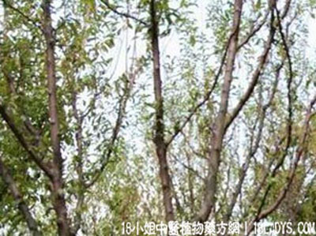

(本文解释权归中药材天地网兄弟站-18小姐中医植物药方网所有,如需转载请注明出处)
红李根(中药材植物名:李树根)(植物科目:蔷薇科)

别名：红心李根。
植物名：李树根。
生长环境：本品为落叶小乔木，常栽培于果园。
入药部分：根。
采集期：全年采根。 自采地点：家种。
性味：性平、味微苦。
功能：散瘀。
主治、用量和用法：①咳血、吐血；②苦伤；③内伤；④跌打。上四项均用干根5钱至2两，猪瘦肉适量，清水煎服。
验方：（治内伤吐血方）红李根1两，红菱根1两，清水三碗，煎成一碗服。
（方解）红李、红菱之根，皆有止血作用，而红李根兼有散瘀之功，红菱根并有清肝肺热、化痰之效，配合使用，以治因于劳伤而吐血者，甚效。《本草纲目》论李根白皮曰：“大寒，无毒。”又谓入药有甘苦三种，民间所用则为红李根或青李根两种。
（方歌）内伤咳血瘀成因，散瘀功推红李根。清肝肺热红菱强，二药组成法可诊。
参考资料：《湖南省中医单方验方第二辑》沅江塞波咀中心联系诊所介绍治早期血吸虫病方：李树根白皮4两，洗净泥沙，煎服。日服三次，连服二日，服满一斤以后，日服二次，每次只用2两，连服4至5天，忌食补。
(本文解释权归中药材天地网兄弟站-18小姐中医植物药方网所有,如需转载请注明出处)